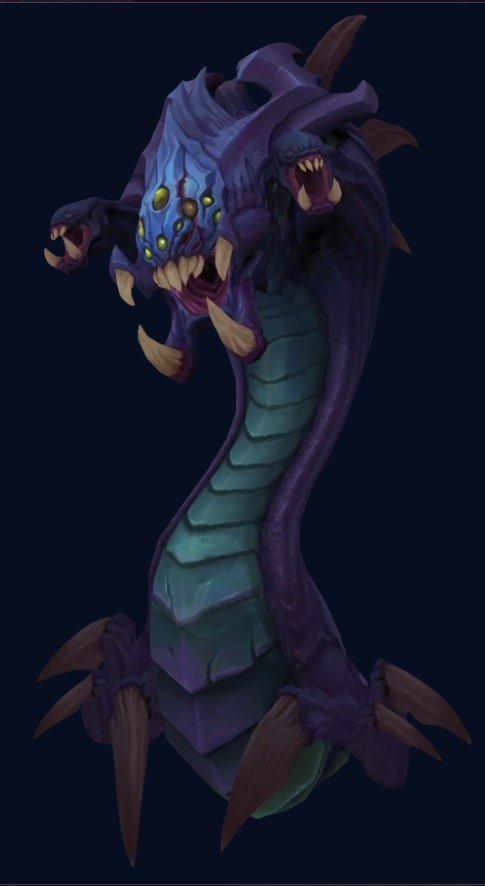

OBJECTIVES
Neautral Objectives or Objectives in short are an essential part of League of Legends. These powerful neautral monsters are found in the middle of the map.
These monsters require teamwork to destroy, but offer powerful bonuses when captured. We call them Elemental Drakes or in short Dragons/Drakes. Each having
its own unique effects and attributes. Part of the objectives are structures, which includes the turrets and inhibitors. The most important thing or objective
is in Leauge of Legends is to destroy the nexus of the enemy team. Through taking objectives(Dragons and Structures) you and your team are increasing
your chance to win the game and claim that victory. These objectives can be achieve with your team or you can take it by yourself if you are strong enough.
At the end of the day Objectives is a very important aspect of the MOBA game genre specifically for the game we chose which is League of Legends or LOL.
And in this page I will go deeply and thoroughly explore these objectives in game.
Dragons/Drakes

Structures
Cloud Drake
A mobile and fast ranged attacker.
Cloud Drake is a neautral monster on Summoner's Rift.
Cloud Drakes moves and attacks quickly
Each Cloud Drake killed grans a stack of CLOUDBRINGER'S GRACE.
Cloud Bringer's Grace - Gain 3.5/ 7/ 10.5/ 14%
(based on stacks granted by Cloud Drake)
Slow Resist and Out-of-Combat bonus movement speed
SOURCE: Cloud Drake
>
AFFECTS: Whole Team
DURATION: Permanent
If the rift is dominated by the Cloud, obtaining 4 Dragon Slayer stacks grants the CLOUD DRAGON SOUL
Cloud Dragon Soul - Gain 10% Bonus movement speed, increased to 60% for 6 seconds after casting your ultimate ability(30 second cooldown)
Infernal Drake
A ranged attacker. It can damage multiple champions.
Infernal Drake is a neautral monster on Summoner's Rift.
Each Infernal Drake killed grants a stack of INFERNAL MIGHT.
Inferal Might - Gain 4/ 8/ 12/ 16%
(based on stacks granted by Infernal Drake)
Attack Damage and Ability Power
SOURCE: Infernal Drake
AFFECTS: Whole Team
DURATION: Permanent
If the rift is dominated by the Inferno, obtaining 4 Dragon Slayer stacks grants the INFERNAL DRAGON SOUL
Infernal Dragon Soul - Damaging basic attacks and abilities trigger an explosion around the target, dealing 80(+22.5%bonus AD)(+13.5%AP)(+2.75%bonus Health)
adaptive damage to the target and nearby enemies (3 second cooldown)
Mountain Drake
A slow but durable ranged attacker. It can damage multiple champions.
Mountain Drake is a neautral monster on Summoner's Rift.
Mountain Drake is a tough and powerful attacker but attacks very slowly
Each Mountain Drake killed grants a stack of MOUNTANIOUS VIGOR.
Mountanious Vigor - Gain 6/ 12/ 18/ 24%
(based on stacks granted by Mountain Drake)
Armour and Magic Resistance
SOURCE: Mountain Drake
AFFECTS: Whole Team
DURATION: Permanent
If the rift is dominated by the Mountain, obtaining 4 Dragon Slayer stacks grants the MOUNTAIN DRAGON SOUL
Mountain Dragon Soul - After not taking damage for 5 seconds, gain a shield for 200(+18%bonus AD)(+13.5%AP)(+13.5%bonus Health)
Ocean Drake
A ranged attacker that slows its target. It can only damage a single champion
Ocean Drake is a neautral monster on Summoner's Rift.
Ocean Drake's attacks slow the target by 30% for 2 seconds.
Each Ocean Drake killed grants a stack of OCEAN WILL.
Ocean Will - Restore 2.5/ 5/ 7.5/ 10%
(based on stacks granted by Ocean Drake)
of missing health every 5 seconds
SOURCE: Ocean Drake
AFFECTS: Whole Team
DURATION: Permanent
If the rift is dominated by the Ocean, obtaining 4 Dragon Slayer stacks grants the OCEAN DRAGON SOUL
Ocean Dragon Soul - Dealing damage to enemies heals you for 160(+36%bonus AD)(+22.5%bonus AP)(+9%bonus Health) and restores
80(+3.5%maximum mana)mana over 4 seconds. Damage to minions and monsters regenerates with 30% effectiveness.
Hextech Drake

A ranged attacker that periodically empowers its next attack to chain to nearby enemies and slows all targets struck.
It can only damage a single champion with its normal attacks.
Hextech Drake is a neautral monster on Summoner's Rift.
Hextech Drake's attacks are non-projectile and every 4th attack is empowered to chain to up
to 3 of the closest nearby targets and slow all targets struck by 40% decaying over 2 seconds
Each Hextech Drake killed grants a stack of HEXTECH PROWESS.
Hextech Prowess - Gain 6/ 12/ 18/ 24
(based on stacks granted by Hextech Drake)
ability haste and 6/ 12/ 18/ 24 (based on stacks granted by Hextech Drake) bonus attack speed
SOURCE: Hextech Drake
AFFECTS: Whole Team
DURATION: Permanent
If the rift is dominated by the Hextech, obtaining 4 Dragon Slayer stacks grants the HEXTECH DRAGON SOUL
Hextech Dragon Soul - Dealing damage to an enemy with basic attacks or ability damage causes
them to be struck with electricity, dealing 25 - 50 (based on level) bonus true
damage and slowing them by (45% melee / 35% range) (+ 3% per 100 bonus AD) (+ 1%
per 100 AP) (+ 0.5% per 100 bonus health) decaying over 2 seconds, while chaining
the effect to up to 3 enemies near the primary target. The slow can stack from
multiple sources and the decay rate is decreased against ranged champions (8 second cooldown).
Elder Dragon
A ranged attacker. It can damage multiple champions.
Elder Dragon is a neautral monster on Summoner's Rift.
Elder Dragon is the most powerful of all dragons and comparable to an objective such as a Baron Nashor due to the strength of its reward.
Killing and Elder Dragon grants ASPECT OF THE DRAGON to all living teammates for 150 seconds
Aspect of the Dragon - Damaging enemies inflicts them with a burn that deals them 75 - 225
(based on minutes) true damage over 2.25 seconds, with the first tick occurring
after 0.25 seconds and the others after 1 second each. Damaging an enemy champion below 20% of
their maximum health while Aspect of the Dragon's buff is active blasts them with
Elder Immolation after 0.5 seconds, executing them, which destroys all shields before dealing 100% of
their current health as true damage. Elder Immolation cannot occur on the
same target from anyone more than once every 2 seconds.Elder immolation cannot execute units with invulnerability or a
minimum health threshold, but can execute through untargetability
SOURCE: Elder Dragon
AFFECTS: Whole Team
DURATION: 150 seconds
In Summary the Benefits of Dragon Slayer
The stacking buffs provided by Dragon Slayer Dragon Slayer grant powerful effects which boost the overall strength of champions that are empowered by them.
CLOUD DRAKE'S buff speeds up a team as they move across the map faster than their enemies can.
It gives a team enough time to head towards an important objective and gain control over it.
The decreased slow effectiveness also helps with outrunning a chase.
HEXTECH DRAKE'S buff greatly increases the attack output of a team as their cooldowns come up quicker and their attacks come out rapidly.
INFERNAL DRAKE'S buff becomes more and more effective as a game continues as a team builds up their stats,
with the buff giving even more stats which in turn leads to a massive boost in attack power.
MOUNTAIN DRAKE'S buff toughens up a team and allows them to take more extended fights, making it difficult for the opposition to deal with.
OCEAN DRAKE'S buff restores tons of health after having taken lots of damage.
It is particularly useful for taking down an objective after a skirmish as the team will restore their health overtime and be healthy in time for the next fight.
All Dragons/Drakes mentioned above are all active dragons you will see ingame or in the Summoners Rift.
DRAGON SOUL WINRATES
Rift Herald
A strong melee attacker that is vulnerable from behind
The Rift Herald is a powerful neutral monster in Summoner's Rift. It is Located in the same pit as Baron Nashor's.
Slaying the Rift Herald drops the Eye of the Herald at the entrance of the pit, which grants Empowered Recall and the ability to summon the Rift Herald to push a lane.
The Eye of the Herald can be picked up by one member of the slayer's team and despawns 20 seconds after it drops.
The Rift Herald spawns up to two times per game. It despawns permanently at 19:45, or 19:55 if in combat.
The second Rift Herald only spawns if the first one is killed before 13:45. If the first Rift Herald is
killed when the timer shows exactly 13:44, the second Rift Herald will spawn at 19:45 and instantly despawn.
Baron Nashor spawns in the same position at 20:00.
GENERAL
The level of the Rift Herald is the average of all champions' levels when she spawns, with a minimum of level 6.
PASSIVES
COLOSSAL STRENGTH: The Rift Herald's basic attacks deal 4% of target's current health bonus physical damage.
MONSTROUS TOUGHNESS: Effects that deal damage based on the Rift Herald's health and are not usually capped, are capped at 50 damage.
WARPED ARMOR: The Rift Herald is immune to all crowd control, except stasis. Additionally, the Rift Herald's stats cannot be modified by any means.
THE EYE OF BARON: The Rift Herald has a vulnerable eye on her back. Champion basic attacks against it deal 12% of Rift Herald's maximum health bonus true damage.
When the eye is hit, it closes for 10 seconds, reduced by 2.5 seconds every time she is struck by a champion's basic attack.
The eye doesn't open more than once every 3 seconds or if the Rift Herald is below 15% maximum health.
ABILITIES
CHARGE: At the start of the fight, the Rift Herald winds up for 2.5 seconds to leap forward, dealing 200% AD physical damage to enemies within her path and
knocking them aside, though not through terrain.
While in the pit, she charges at the current location of the enemy who first damaged her.
SWIPE: At 65.75% and 32.75% of Rift Herald's maximum health,
she winds up for 1.5 seconds to strike in a cone in front of her, dealing 300% AD physical damage to enemies hit.
Baron Nashor's Pit, where the rift herald also spawns
SUMMONED FORM
The Eye of the Herald can be crushed to summon the Rift Herald. The summoned Rift Herald relentlessly pushes her way to the enemy Nexus.
The summoned Rift Herald has different statistics, effects and abilities than the pit Rift Herald:
GENERAL
She heads to the closest lane and start pushing it.
She focuses mainly on the closest minions and targetable structures.
Her level is the average of the levels of the champions of both teams the moment the Eye is picked up.
She grants her kill credit to the champion she was summoned by; any unit she kills and any turret plate she destroys is accredited to the summoner, granting them the
gold.
PASSIVES
Her basic attacks deal 1.75% of Herald's current health bonus physical damage and knock back all enemy minions in front of her.
THE EYE OF BARON: Every 3 seconds, the eye on Rift Herald's back will open. Champion basic attacks against the eye deal 40% of Rift Herald's maximum health bonus true damage.
ABILITIES
LEAP ATTACK: When the Rift Herald approaches a targetable structure, she winds up for 2.5 seconds to leap into her attack range of the structure.
Upon arrival, she headbutts the structure, dealing 2000 − 2750 (based on level) true damage to it, 200% AD physical damage to nearby enemy champions and
knocking them back, and 66% of her current health as true damage to herself if she damaged the structure.
She is displacement immune during the wind up and the leap.
ENRAGE: At 65.75% and 32.75% of Rift Herald's maximum health, she winds up for 1.5 seconds to strike in a cone in front of her, dealing 300% AD physical damage to enemies hit.
DUCHESS SMASH: She disables the Reinforced Armor of nearby enemy turrets.
NOTE
-EYE OF THE HERALD
Baron Nashor

An epic monster with a wide variety of team threatening attacks. Killing this monster grants the Hand of Baron buff to living members of your team,
granting a large amount of attack damage and ability power as well as dramatically enhancing the power of nearby allied minions.
HAND OF BARON - is a team-wide neutral buff granted by slaying Baron Nashor. It is available only on Summoner's Rift.
Grants Empowered Recall and nearby allied minions are greatly empowered.
Gives 12 - 48(based on minutes)bonus attack damage and 20 - 80(based on minutes)ability power determined by the time the Baron is slain.
SOURCE: Baron Nashor
AFFECTS: Team
DURATION: 180 seconds
Baron Nashor is the most powerful neautral monster on Summoner's Rift
Killing Baron Nashor grants Hand of Baron to all living teammates for 180 seconds, which grants bonus attack damage,
bonus ability power, Empowered Recall, and an aura that greatly increases the power of nearby minions.
FEAUTRES
Basic Attacks
Baron Nashor will attack the unit closest to him
SINGLE-TARGET REAR ATTACK: If the target is behind Baron Nashor, he erects a spike that deals them 100% AD physical damage.
RANGED ATTACK: If the target is in front of Baron Nashor, he spits an acid missile at them that upon arrival deals 100% AD physical damage and
applies two stacks of Voracious Corrosion.
MELEE ATTACK: If the target is in front of Baron Nashor within about melee range, he occasionally uses a melee attack instead of a
ranged attack, dealing them 100% AD physical damage and 50% AD physical damage to nearby units.
Passives
PRESENCE OF THE BARON: While Baron Nashor is alive, all obstructing Champion icon.png champions, pets, and wards that are on top of him are pushed to a location in front of him.
Additionally, Baron Nashor is immune to ghosting effects
pon spawning in his pit, Baron Nashor knocks back all units that are within his collision radius
DEBUFF IMMUNITY: Baron Nashor is immune to all crowd control, except stasis. Additionally, Baron Nashor's stats cannot be modified by any means.
BARON'S GAZE: Baron Nashor takes 50% reduced damage from the unit that it has most recently attacked for 8 seconds.
VORACIOUS CORROSION: Reduces the target's Armor icon.png armor and Magic resistance icon.png magic resistance by 0.5,
stacking up to 100 times for a total of 50 maximum resistances reduction. Lasts for 8 seconds,
but will be removed 4 seconds after Baron Nashor is slain instead due to its corpse despawning.
VOID CORRUPTION: Basic attacks cause another burst of 60 (+ 20% AD) bonus magic damage that can occur every 0.75 seconds.
This attack targets the nearest champion with the lowest number of Voracious Corrosion stacks, applying another stack.
Abilities
Baron Nashor will activate an ability once every 6 basic attacks. Baron's first ability will be random. However, all abilities after the first may be predicted;
Baron Nashor's ability rotation is cyclical (ex. Acid Pool > Acid Shot > Tentacle Knockup > Acid Pool).
If there are more units behind Baron Nashor than in front of him, he will activate the area-of-effect rear attack instead.
ACID POOL: After winding up for 2 seconds, Baron Nashor spits out 3 pools of acid in a cone in front of him,
landing over 0.75 seconds and dealing 10% AD magic damage to all champions upon impact as well as creating a field for 2.5 seconds that
slows those within by 50%.
ACID SHOT: After winding up for 2 seconds, Baron Nashor spits acid down along a straight line over 2 seconds, dealing 20% AD magic damage to all units it hits.
TENTACLE KNOCKUP: Baron Nashor summons a tremor beneath the target's location that erupts with a tentacle after 1.25 seconds,
dealing 25% AD magic damage to units within and Airborne icon.png knocking them up for 1.25 seconds. Units near the edge of the area are also slightly knocked away.
AREA-OF-EFFECT REAR ATTACK: Baron Nashor erects a cluster of spikes behind him, dealing 50% AD physical damage to units within the area and
stunning them for 0.5 seconds.
Turrets/Towers

Turrets, also called towers, are heavy fortifications that attack enemy units on sight. Turrets are a core component of League of Legends.
They deal damage to enemies and provide vision to their team, allowing them to better control the battlefield.
Turrets target one unit at a time and deal heavy damage.
Teams must destroy enemy turrets to push their assault into enemy territory.
There are 11 turrets per team on Summoner's Rift.

NOTES:
TURRET PLATING: Outer turrets have large stone shields attached called plates. Plates are segments of the turret's health. Turrets start with five plates, each with 1000 health, meaning that they start with 5000 health. When a champion destroys a plate, they and nearby allies get a gold reward. However, the turret then gains damage resistance, thus becoming slightly harder to destroy. Plates disappear 14 minutes into the game, along with their extra damage resistance.
PASSIVE: Grants -25 / 10 / 45 / 80 / 115 (based on current health) bonus armor and bonus magic resistance.
PASSIVE - BULWARK: When a turret has its health reduced to 4000, 3000, 2000, and 1000 health; it gets a stack of Bulwark for 20 seconds. Each stack grants 0 − 180 (based on nearby enemy champions) bonus armor and bonus magic resistance, up to a maximum of 0 − 720 (based on nearby enemy champions) resistances at 4 stacks. This value changes dynamically depending on the number of alive enemy champions within Range model.png 850 range of the center of the turret.
Plates take 17% reduced damage from minions and ranged champions.
Destroying a plate grants 160 gold
The top and mid outer turrets receive a FORTIFICATION bonus for the first five minutes of each game.
NOTES:
Inhibitor turrets regenerate 3 health per second up to a maximum that depends on their current health.
If their current health is:
Below 33.3%, they regenerate up to 33.3% health.
Above 33.3% and below 66.7%, they regenerate up to 66.7% health.
Above 66.7% and below 100%, they regenerate up to 100% health.
NOTES:
Nexus turrets regenerate 6 health per second up to a maximum that depends on their current health.
If their current health is:
Below 33.3%, they regenerate up to 33.3% health.
Above 33.3% and below 66.7%, they regenerate up to 66.7% health.
Above 66.7% and below 100%, they regenerate up to 100% health.
Inhibitors
Inhibitors are structures that prevent super minions from spawning in the respective same lane. Inhibitors have 4000 health,
15 health regeneration per second, 20 armor, and 0 magic resistance.
-Super minions are powerful minions with melee range. They only spawn on lanes where enemy inhibitors are destroyed, and stop spawning when the inhibitor respawns. While super minions are spawning, no siege minion will spawn in that lane.
Each team has 3 inhibitors on Summoner's Rift in each of their bases, of which at least one inhibitor must be destroyed to render the Nexus and its defending turrets vulnerable to being attacked (the Nexus will be invulnerable as long as one of its turrets or all 3 inhibitors are standing). Every inhibitor is protected by a turret that makes that inhibitor invulnerable; destroying the turret makes the inhibitor vulnerable.
Once a team's inhibitor is destroyed, the enemy's Nexus will begin spawning a super minion in the waves set in the respective lane, replacing the siege minion in its place if applicable. If all 3 of a team's inhibitors are destroyed, it will instead spawn two super minions in each lane, per wave.
Destroyed inhibitors respawn after 5 minutes, therefore stopping the opposing Nexus from spawning any more super minions.
Notes
Inhibitors do not have any special buffs or effects.
Armor penetration has no effect on an inhibitor's armor.
The damage dealt to an inhibitor with a basic attack is the sum of the Attack damage icon.png base attack damage, plus the higher of bonus attack damage and 60% of ability power.
If 60% of a champion's ability power is greater the amount of their bonus attack damage, the attack's damage converts from physical damage to magic damage.
When the announcer notifies that either yours or the enemy's inhibitor will respawn soon, said inhibitor will respawn in 15 seconds.
In Summoner's Rift, destroying an Inhibitor will spawn a Super Minion in each wave for the next 8 minion waves. Usually two minion waves before the Inhibitor completely recovers will not have any Super Minions.
In Howling Abyss, destroying the Inhibitor will spawn a Super Minion in each wave for the next 10 minion waves.
Nexus
The Nexus is a structure that serves as the primary objective in all game modes in League of Legends. The team that destroys the opposing team's Nexus wins the match. The Nexus has 5500 health and 20 health regeneration per second, and 0 for all other stats.
In Summoner's Rift, each team has a Nexus that is guarded by two turrets in front of it, and is responsible for spawning minions in each lane. They are located directly outside of each team's spawn. A Nexus is invulnerable so long as all three allied inhibitors or at least one of its guarding turrets are standing.